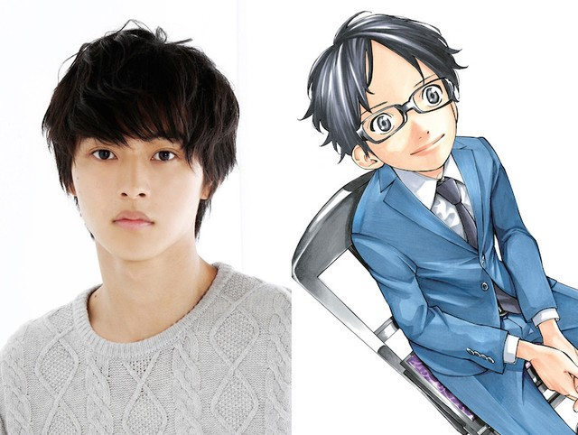
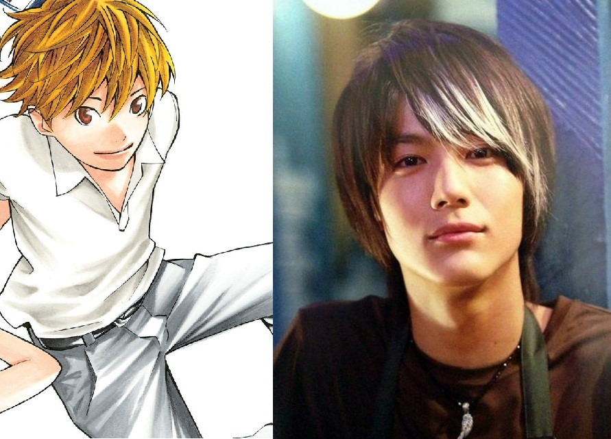
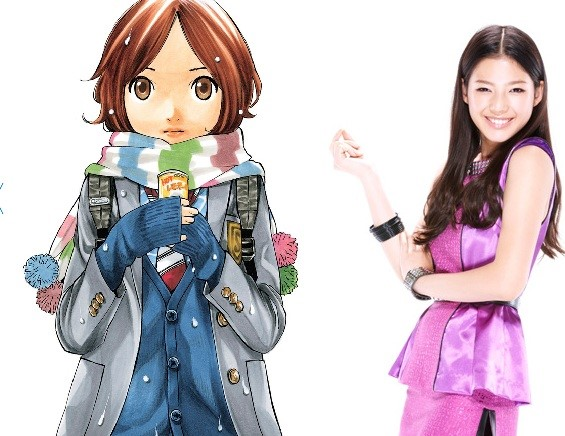

| Home | Mendaftar | Menu Utama | Info | Review | Sinopsis | Daftar Pemain | Live Action |
|
Menu Utama
Shigatsu wa Kimi no Uso, Dapatkan Film Live Action, Umumkan Pemeran Utama
Masih ingat gosip seputar adaptasi layar lebar Kimiuso beberapa waktu lalu setelah situsnya didaftarkan? Situsnya akhirnya dibuka secara resmi dan mengumumkan bahwa Shigatsu wa Kimi no Uso benar-benar akan mendapatkan film live action! Situs tersebut juga memuat beberapa pengumuman penting, yang pertama adalah perkiraan waktu tayang film ini, yang dikatakan akan mulai tayang tahun 2016. Lalu informasi berikutnya pastinya adalah pemeran karakter utama.
 Kosei Arima sang pianis jenius akan dimainkan oleh Kento Yamazaki, sedangkan sang violinis Kaori Miyazono akan diperankan oleh Suzu Hirose. Dikatakan untuk mempersiapkan diri memerankan pemusik klasik ini, Yamazaki dan Hirose mulai berlatih memainkan piano dan biola setengah tahun sebelum syutingnya dimulai.   Beberapa karakter pendukung juga diumumkan. Tsubaki Sawabe akan diperankan oleh salah satu member pop group, E-girls, Anna Ishii. Dan Ryota Watari akan dimainkan oleh Taishi Nakagawa. Film ini akan disutradarai oleh Takehiko Shinjou dengan skenario oleh Yukari Tatsui. Diperankan oleh para aktor muda berbakat, karakter dalam adaptasi live action-nya akan sedikit dimodifikasi. Arima dan teman-temannya akan menjadi anak SMU di film ini, dibandingkan dengan di anime-nya dimana mereka semua adalah murid SMP. Selain itu, film ini juga merekrut figuran untuk ikut bermain dalam filmnya! Kalau kamu kebetulan ada di Tokyo Oktober hingga November ini, coba saja lamar! Siapa tahu jadi bintang film. Tapi yang pasti kalian akan kebagian nangis duluan karena tahu akhir ceritanya sebelum tayang di bioskop. Dengan tema dan cerita yang normal dan bagus, Kimiuso live action harusnya bisa menjadi film bagus yang takkan dibabat oleh kritikus. Semoga sesuai ekspektasi dan tayang di bioskop Indonesia juga! |

Blog 2018 @Nishi - anisnishi9@gmail.com